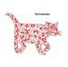
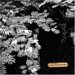
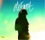
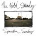
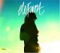
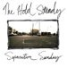
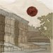
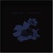
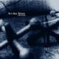
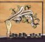

The Maiden Voyage
January 10, 2006
Music in this day and age has become a troubling thing in my life. I recently read the Rolling Stone top 50 records of 2005, and was
disturbed, mostly in that I have ceased to know what is going on in popular music these days. If a record
sells more than a million copies, I somehow haven't heard of it. There was once a day when i held a balance
between knowing and respecting (or at least attempting to) what was going on in popular music, and keeping up to date with the indie
scene. However, with my head first dive into the Minneapolis local scene, my sudden lack of funds, and the
emergence of a new public radio station here in the twin cities (89.3, the current) I have taken a step back from
the frontiers of a complete musical awareness and began to walk a new path of stimulating, yet unknown music from the
small bands that people do not really hear about. Now I don't mean people, as in you people reading this, but I
mean most people, the masses. I have lost my connection, however small it was, with the general American music consumer, and instead
become relegated to the hipster cool, I’m better than you, small bar, small band, i know those guys
sort of mentality. So I do occasionally wear a worn-out suit coat over a t-shirt, and yes I can play the
piano riff from that Vanessa Carlton song, but I couldn't tell you when the last Missy Eliott record came out,
or what Fall Out Boy has been up to. I do realize that these bands and artists exist, but I think a better
awareness might be in order.
This collection is to try and do two things: 1) spread musical enlightenment to those of you who may have lost
the time or avenue required to find new, important, boundary shaking music, and 2) reconnect myself with popular
music that I have left behind, because hey it is still music, and there is nothing better in life than knowing
what you don't like—and then making fun of it.
This format will change as this evolves, but I plan on posting what I have purchased, and what I have listened
to in the period since the last writing, hopefully monthly. As this project progresses, there might be apparent
trends in musical taste, or in a switch to a new taste. It will be interesting. Since I have no real job the
“listened to” column will always be longer than the “purchased” column. I may
add a “what I should be listening too” column as well, according to top 10 lists or your
suggestions. We shall see.

I have been enjoying some fine albums. THE CONCRETES, hailing from Sweden with names like Eriksson, Nyström
and Ulrik, craft a simple indie-pop record that, though lacking in some of the production levels I value, does not
disappoint. The first song, Say Something New, you may have heard in a target commercial. The rest of the album
shares the catchy simplicity of track one, the softly distorted, bright guitars, with the addition of a hint of
Motown, vaguely similar to THE RAVENOTTES. Though not so apparent on the recording, THE CONCRETES are made up of
six or seven people with about ten additional guests on the record. Where the sounds all these people made lie in
the recording I have yet to determine. I have found the bands WOLF PARADE and CLAP YOUR HANDS SAY YEAH to be
enjoyable, but overrated. Calling WOLF PARADE the drunker version of ARCADE FIRE is like calling Narnia the LOTR for
2006—except that it is not—it provides a “less than” experience. WOLF PARADE is, bluntly,
not as epic. There you go. I'm not saying that I do not enjoy listening to
these records, I do, but not as much as to others. However, the two bands are slowly growing on me, so maybe in ten
more listens my rant may change.

 

DOLOREAN and RYAN ADAMS' new records have a country-styled flair to them, reminiscent
of Harvest by Neil young, or maybe some country blues by Dylan. Slide guitars, Nashville tunings and classic country-blues
chord progressions can be found on DOLOREAN's violence in snowy fields, as well as ADAMS' last three records, all of
which were released this year, one early on, one mid summer and the last in late November. I hear myself being drawn
into this style lately. Alt-Country-Rock is getting more popular, thank you Johnny cash. ELEFANT provides a simple and
enlivening record slightly reminiscent of The Strokes Is This It, or Hot Hot Heat’s Makeup The Breakdown. They
less polished than former, and less brazen in their excitement than the latter, but enjoyable through and through. THE
HOLD STEADY's Separation Sunday got itself a place on Rolling Stone’s top 50, which I found shocking, for the
fact that I did not think they were big enough. The smart lyrics, often about the twin cities (The Hold Steady are out
of NYC, they are the remnants of Minneapolis band Lifter Puller) build a very interesting tale. The band added a man
on the keys for this record and it really fills out their late night, drunken, rock and roll sound.


DOLOREAN and RYAN ADAMS' new records have a country-styled flair to them, reminiscent
of Harvest by Neil young, or maybe some country blues by Dylan. Slide guitars, Nashville tunings and classic country-blues
chord progressions can be found on DOLOREAN's violence in snowy fields, as well as ADAMS' last three records, all of
which were released this year, one early on, one mid summer and the last in late November. I hear myself being drawn
into this style lately. Alt-Country-Rock is getting more popular, thank you Johnny cash. ELEFANT provides a simple and
enlivening record slightly reminiscent of The Strokes Is This It, or Hot Hot Heat’s Makeup The Breakdown. They
less polished than former, and less brazen in their excitement than the latter, but enjoyable through and through. THE
HOLD STEADY's Separation Sunday got itself a place on Rolling Stone’s top 50, which I found shocking, for the
fact that I did not think they were big enough. The smart lyrics, often about the twin cities (The Hold Steady are out
of NYC, they are the remnants of Minneapolis band Lifter Puller) build a very interesting tale. The band added a man
on the keys for this record and it really fills out their late night, drunken, rock and roll sound.



Now, a few, short, 2005 band highlights: RYAN ADAMS AND THE CARDINALS, BRIGHT EYES, THE ARCADE FIRE and SUN KIL MOON.
BRIGHT EYES and RYAN ADAMS both released several happening records the past year, which is what puts them on my list.
They are prolific; Adams with three albums (one of which was a double disc) and Oberst with two, not to mention that
Oberst's download on iTunes (When The President Talks To God—a criticism of Bush’s first term) which was
one of the top free downloads in the country. As a fan of THE RED HOUSE PAINTERS I found myself purchasing 2003's ghost
of the great highway by SUN KIL MOON earlier in the year, on to be sucked in and thus followed it up with Tiny Cities,
just recently released. Tiny Cities is a record made up of Modest Mouse covers all reinterpreted by Mark Kozelek. Not only
did kozelek unveil a new record, but he also headed the fictional band Hot Tears in the film ShopGirl.

And though Funeral was already old news come 2005, i had somehow missed it when it was new due to my local music phase,
but came love and enjoy it as much as breathing, or drinking Grain Belt from the tap. Also, I somehow missed both the
shows Arcade Fire played in town, and had to make due with listening to 89.3’s broadcast of their First Avenue
appearance; which—although wonderful—probably did not do justice, even if Mary Lucia did describe in detail
stage happenings and the wardrobe.
I conclude with a list of five bands who deserve a listen who released an album in 2005.
Cloud Cult
Crystal Skulls
Headphones
Iron & Wine with Calexico
Spoon
Vicious Vicious
Oops, that was six.
Until I write again, listen to something good.
KRISTIAN